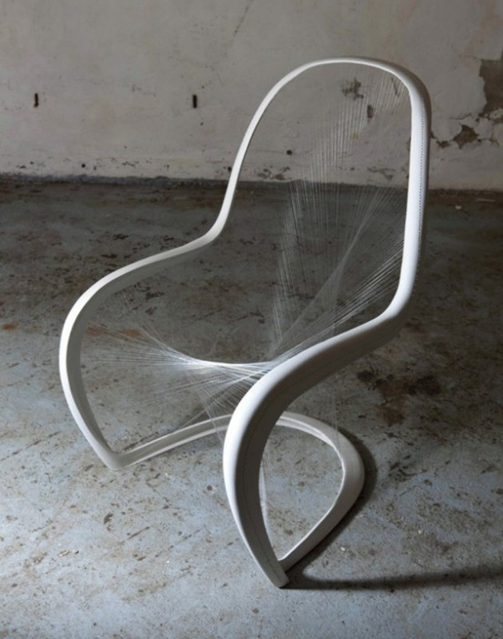
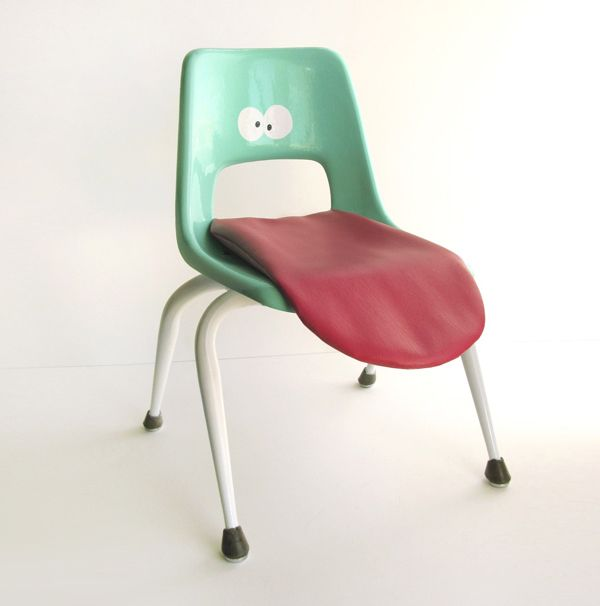
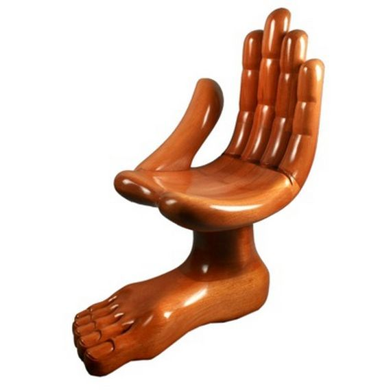

Here is a compresnsive list of arguments against the frankly wrong and authoritarian idea of "Chair Appreciation".
Look here at this man. Has this man done anything of value in his life. I'd argue no. I mean look at him. He could amount to something, maybe he has talent. But now? He's clearly off his rocker. Chairs should not be apreciated!
Chairs should have four legs and should be used only for proper chair like purposes. But in fact, chairs are being made without these simple rules being obliged!
Look at these chairs. Look at 'em. only 1 has four legs. That is a terrible fraction. One of them has a tounge, a tounge!. That is not a good chair. And one bad apple spoils the batch. and here are 3 bad apples. Not good, and definitely not worth appreciation.